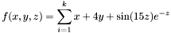

En esta sección se tratarán los puntos básicos para la construcción de un proyecto de optimización utilizando UNGenético 2.0. Es importante aclarar que estos proyectos pueden ser construidos para ser visualizados en dos formas distintas: la primera y más sencilla corresponde a la aplicación estándar de los compiladores de lenguaje C++ conocida como consola, la segunda corresponde al entorno gráfico ofrecido por la librería wxWindows donde se pueden crear aplicaciones en diferentes plataformas siempre y cuando se implementen un conjunto de instrucciones propias de esta librería. En las siguientes secciones se explicará el método de construcción para los dos tipos de aplicaciones, cuando así se requiera.
Con el fin de ilustrar el proceso plenamente, se planteado una
función prototipo para la cual se buscará el valor de su óptimo global. Mientras que en las demás secciones de esté tutorial se explica cada etapa de la construcción del proyecto utilizando
UNGenético 2.0.
Como ejemplo se propone la maximización de la función

La optimización de esta función sugiere la utilización de codficación híbrida ya que cada una de sus variables es de distinto tipo; además la función cuenta con una restricción para una de ellas, por lo tanto se justifica el uso de UNGenético 2.0 como herramienta de optimización para esta función.
Las optimizaciones implementadas en
UNGenético 2.0 se ejecutan dentro de un proyecto propio de un compilador de lenguaje C++ de libre escogencia. Para incluir
UNGenético 2.0, en la carpeta del proyecto deben copiarse todos los
archivos de la librería, tanto los encabezados como los fuente (extensiones
.h y
.cpp); en caso contrario, debe especificarse en el proyecto la ruta donde se encuentran dichos archivos. El proyecto solamente debe contener un archivo fuente de C++ (extensión
.cpp) donde se especificarán todas las características del sistema a optimizar, su nombre es de libre escogencia.
En la mayoría de compiladores de C++ es posible crear proyectos especiales para aplicaciones en consola. Por lo tanto, dependiendo del compilador utilizado se debe crear un proyecto que construya este tipo de aplicación.
En el archivo principal del proyecto, es necesario emplear una instrucción que incluya el archivo
UNGenetico.h, encargado de vincular a los demás archivos de la librería. El siguiente fragmento muestra cómo debe iniciarse el archivo mencionado para el
sistema propuesto.
Para todo proyecto de optimización es necesario definir una clase derivada de
AlgoritmoGenetico en la que se establecen las propiedades particulares del sistema a optimizar tales como los operadores genéticos, las características de los individuos de la población, la función objetivo, entre otras.
La macros DECLARAR_ALGORITMO(
NombreAlgoritmo) y FIN_DECLARAR_ALGORTIMO son útiles para definir una clase derivada de
AlgoritmoGenetico cuyo nombre se puede asignar libremente. Al utilizarlas, implícitamente se está declarando la clase y su constructor por defecto. Dentro de esta definición es posible
si se requiere sobrecargar los métodos que cambian las propiedades por defecto de la clase, estos son:
-
Método inicializarParametros(): modifica los valores establecidos por defecto de los miembros de la clase AlgoritmoGenetico.
-
Método definirOperadores(): define los operadores genéticos que se usarán en el proyecto.
Dentro de la definición de esta clase se deben declarar las variables del sistema que coincidirán con los genes que conformarán a los individuos de la población; opcionalmente para este ejemplo se declara también el método
mostrarIndividuo(Individuo& Ind) que servirá para visualizar la información genética presente en un objeto de la clase
Individuo.
En el siguiente fragmento se muestra el uso de las macros mencionadas para definir una clase derivada de
AlgoritmoGenetico llamada
MiAlgoritmoGenetico, también se declaran las variables
x,
y, y
z del tipo adecuado para cumplir con las condiciones establecidas en el
sistema propuesto.
Para el ejemplo actual se desea:
-
Maximizar la función objetivo.
-
Ampliar la cantidad de individuos por generación en el algoritmo genético a 200.
-
Asignar valores iniciales no aleatorios a los genes de la primera generación del algoritmo.
El siguiente fragmento muestra cómo se realizan los cambios mencionados:
void MiAlgoritmoGenetico::inicializarParametros()
{
m_IndicadorMaximizar=true;
m_TamanoPoblacion=200;
m_IndicadorInicializarPoblacionAleatoria=false;
}
UNGenético 2.0 posee un conjunto de operadores de probabilidad, selección, asignación de parejas, reproducción, cruce, mutación, adaptación y finalización para ejecutar el algortimo genético. La tabla
Operadores por defecto de UNGenético señala cuáles son los operadores establecidos por defecto. Para definir otro conjunto de operadores debe implementarse el método
definirOperadores() de la clase
AlgoritmoGenetico. En la implementación de este método es recomendable utilizar las macros que definen los operadores que utilizará el algoritmo, Los dos tipos de macros diseñados para esta función son:
-
Macros con el prefijo DEFINIR_: hacen referencia a operadores de los que sólo debe definirse uno para operar en el algoritmo genético, es decir, los operadores de probabilidad, selección, asignación de parejas y reproducción. Estas son:
DEFINIR_OPERADOR_PROBABILIDAD(tipoOperador)
DEFINIR_OPERADOR_SELECCION(tipoOperador)
DEFINIR_OPERADOR_PAREJAS(tipoOperador)
DEFINIR_OPERADOR_REPRODUCCION(tipoOperador)
-
Macros con el prefijo ADICIONAR_: hacen referencia a operadores que pueden actuar en conjunto en el algoritmo, como los operadores de adaptación y finalización, o los correspondientes a cada gen del modelo como los operadores de cruce y mutación. Estas son:
ADICIONAR_OPERADOR_ADAPTACION(tipoOperador)
ADICIONAR_OPERADOR_FINALIZACION(tipoOperador)
ADICIONAR_OPERADOR_MUTACION(tipoOperador)
ADICIONAR_OPERADOR_CRUCE(tipoOperador)
En todas ellas, el parámetro
tipoOperador especifica el tipo de operador a utilizar en cada caso junto con sus parámetros iniciales.
El siguiente fragmento muestra cómo definir un nuevo conjunto de operadores para el algoritmo, mientras que en la tabla
Operadores de UNGenético se puede observar una lista general de los operadores que hacen parte de la librería y que pueden reemplazar a los operadores asignados por defecto.
En algunas de las definiciones se especifica la palabra clave
this como parámetro del operador. Esto es necesario en operadores que requieren una referencia al objeto
AlgoritmoGenetico sobre el que operan.
Cuando se requiera cambiar algún operador de cruce y/o mutación por defecto para algún gen, es indispensable adicionar operadores de cruce y/o mutación para todos los genes que conforman al individuo teniendo en cuenta que el orden en que se adicionen estos operadores debe coincidir con el orden y tipo de los genes del individuo.
Los individuos del algoritmo deben ser definidos de acuerdo con las variables del sistema a optimizar. Con este fin se implementa el método
codificacion(Individuo * Ind, int estado). Adicionalmente, para este ejemplo en particular se ha definido el método
mostrarIndividuo(Individuo & Ind) que se utilizará para visualizar la información genética de los individuos durante la ejecución del algoritmo.
-
Método codificacion(Individuo *Ind, int estado)
La codificación consiste en transferir el dato presente en cada variable del modelo hacia su gen respectivo dentro del individuo. La implementación de este método utiliza las macros especilizadas en insertar genes del tipo adecuado dentro del individuo que simultáneamente se relacionarán con una variable del sistema. Una descripción detallada de estas macros pueden verse en la sección Definiciones.
void MiAlgoritmoGenetico::codificacion(Individuo * Ind , int estado)
{
ADICIONAR_GENARREGLO_BOOL(Ind, 0, x, 1, 10 )
ADICIONAR_GENENTERO(Ind, 1, y, -10, 40, 20)
ADICIONAR_GENREAL(Ind, 2, z, 0.00, 6.00, 1.0)
}
-
Método mostrarIndividuo(Individuo & Ind)
Este método se emplea para visualizar el valor de cada gen presente en el individuo apuntado por Ind junto con su función objetivo. El siguiente fragmento muestra el procedimiento realizado para el sistema planteado.
void MiAlgoritmoGenetico::mostrarIndividuo(Individuo & Ind)
{
cout <<"\nFunción Objetivo:\t" << Ind.objetivo(true);
cout << "\nx: ";
int tam = x.getSize();
for(int i=0; i<tam; i++)
{
cout << x[i];
}
cout << "\ny: " << y;
Cout << "\nz: " << z;
}
En la primera línea de esta función, en la instrucción Ind.objetivo(true), el parámetro true indica que deben actualizarse las variables del sistema, puesto que se van a imprimir. Si no se utilizara esta instrucción, o no se quisiera acceder a la función objetivo, sería necesario extraer los valores presentes dentro de cada gen con ayuda del método codificacion(&Ind, ESTADO_DECODIFICAR) quien ejecuta la decodifcación, es decir, transfiere la información presente en los genes del individuo a las variables del sistema.
En el método
objetivo() de la clase
AlgoritmoGenetico se define la función a optimizar. Este método retorna un valor real (de tipo
double) que debe estar relacionado por medio de la función objetivo con las variables del sistema previamente declaradas. Cuando existan restricciones para esta función, debe penalizarse a los individuos que las incumplan. Las penalizaciones deben reflejarse en su función objetivo.
Para el sistema planteado en este caso, el método objetivo() retorna la variable FO correspondiente al valor de la función objetivo para un individuo. En este caso, se requiere maximizar la función objetivo, por lo tanto, los individuos que incumplan la restricción de valores pares para la variable y, serán penalizados disminuyendo su función objetivo en 100. Lo anterior puede resumirse en el siguiente fragmento:
double MiAlgoritmoGenetico::objetivo()
{
double FO=0.0;
int tam = x.getSize();
for(int i=0; i<tam; i++)
{
FO = FO + x[i];
}
FO = FO + 4*y + sin(15*z)*exp(-z);
if(y%2==0)
FO = FO - 100;
return (FO);
}
El procedimiento principal que enmarca al algoritmo genético se establece en la función main() propia del lenguaje clase C++. Dentro de este procedimiento es necesario realizar varias actividades, entre ellas:
-
Se debe crear una instancia de la clase derivada de AlgoritmoGenetico que ha sido definida. Para este ejemplo se ha creado un objeto de la clase MiAlgoritmoGenetico llamado MiAg.
-
El algoritmo genético puede ejecutarse en un sólo paso o mediante un ciclo que recorra cada una de sus generaciones. La primera opción es la más sencilla y se implementa al invocar el método optimizar() de la clase AlgoritmoGenetico. La optimización paso a paso debe iniciar invocando al método iniciarOptimizacion() y continúa con un ciclo que repite la ejecución del método iterarOptimizacion() hasta que la función finalizar() retorne true.
-
Cuando el algoritmo es ejecutado paso a paso, es posible visualizar la información genética del mejor individuo presente en cada generación. Para esto se utiliza el método mostrarIndividuo(Individuo & Ind) creado para este ejemplo. En este caso el método recibirá como parámetro una referencia al mejor individuo de cada generación del algoritmo.
-
Si se requiere, se puede invocar la función mostrarMedidas() para obtener los valores de las medidas propias del algoritmo cuando éste termine su ejecución.
El siguiente fragmento muestra la implementación del procedimiento principal para el
sistema tratado.
void main()
{
MiAlgoritmoGenetico MiAg;
int i=0;
MiAg.iniciarOptimizacion();
do
{
MiAg.iterarOptimizacion();
cout << "\n\nGENERACION "<< i;
MiAg.mostrarIndividuo(*MiAg.m_pMejorEnEstaGeneracion);
i++;
}while(!MiAg.finalizar());
MiAg.mostrarMedidas();
}
Generado el Fri Apr 9 18:35:50 2004 para UNGenético por
 1.3.6
1.3.6